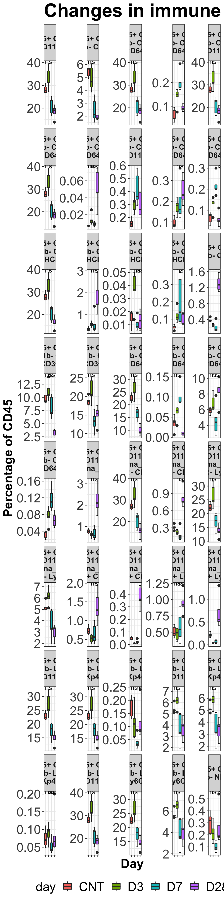

8 Flow cytometry
Flow cytometry data can be quantified in many different ways and with different techniques. For the purpose of these data analyses, manual gating has been achieved in FlowJo and cell frequencies and populations exported as a .csv file. This .csv file is the primary input for this R pipeline which aims to output box plots for each gated cell population.
This example data set is from an innate response study whcih investigated the immune response in the lungs during the first 28 days of infection.
8.1 Loading packages
library(readxl)
library(ggplot2)
library(RColorBrewer)
library(dplyr)
library(tidyverse)
library(scales)##
## Attaching package: 'scales'## The following object is masked from 'package:purrr':
##
## discard## The following object is masked from 'package:readr':
##
## col_factor
library(stringr)
library(tidyr)
library(knitr)
library(forcats)
library(broom)
library(ggfortify)
library(stats)
library(ggpubr)
library(grDevices)
library(rstatix)##
## Attaching package: 'rstatix'## The following object is masked from 'package:stats':
##
## filter8.3 Loading data
Df <- read_excel("DATA/innate_normalizedto45.xlsx", sheet = "CD3CD11b No Day 14")
marker_legend <- read_excel("DATA/marker legend.xlsx")
# Remove Freq of Parent columns
Df1 <- Df %>%
select(-matches("Parent"))
# Remove "Leukocytes/LIVE/Single Cells/" from col names
names(Df1) <- str_remove(names(Df1), "Leukocytes/LIVE/Single Cells/")
Df1 <- Df1 %>%
rename_all(funs(str_replace(., "\\|.+", "")))# Remove "|Freq of..." from col names## Warning: `funs()` was deprecated in dplyr 0.8.0.
## Please use a list of either functions or lambdas:
##
## # Simple named list:
## list(mean = mean, median = median)
##
## # Auto named with `tibble::lst()`:
## tibble::lst(mean, median)
##
## # Using lambdas
## list(~ mean(., trim = .2), ~ median(., na.rm = TRUE))
## This warning is displayed once every 8 hours.
## Call `lifecycle::last_lifecycle_warnings()` to see where this warning was generated.
Df1 <- Df1 %>%
rename_all(funs(str_replace_all(., "\\/Q[:digit:]+\\:", ""))) %>%
rename_all(funs(str_replace(., "\\/", " "))) %>%
rename_all(funs(str_replace(., "\\,", " "))) %>%
rename_all(funs(str_replace(., "\\ \\,", " ")))
# str_extract_all(names(Df1), "[:alpha:]+[:digit:]+[\\+\\-]")
#
#
#
#
#
#
# marker_select <- function(col_title) {
# marker_df <- str_detect(names(DATA1), "[\\+\\-]")
# return(marker_df)
# }8.4 Making the data tidy for plotting
tidy_Df1 <- pivot_longer(data = Df1, cols = starts_with("CD45+"), names_to = "cell_types", values_to = "percentage_of_CD45")
tidy_Df1 <- tidy_Df1 %>%
separate(col = "SAMPLE", into = c("day", "replicate"))
tidy_Df1 %>%
select(cell_types) %>%
unique()## # A tibble: 128 × 1
## cell_types
## <chr>
## 1 "CD45+ "
## 2 "CD45+ CD3- CD11b+ "
## 3 "CD45+ CD3- CD11b+ CD25+ "
## 4 "CD45+ CD3- CD11b+ CD103+ "
## 5 "CD45+ CD3- CD11b+ gamma_delta "
## 6 "CD45+ CD3- CD11b+ NKp46+ "
## 7 "CD45+ CD3- CD11b+ CD11c+ CD64- "
## 8 "CD45+ CD3- CD11b+ CD11c- CD64- "
## 9 "CD45+ CD3- CD11b+ CD86- CD64+ "
## 10 "CD45+ CD3- CD11b+ CD86+ CD64+ "
## # … with 118 more rows## # A tibble: 10 × 4
## day replicate cell_types percentage_of_CD45
## <chr> <chr> <chr> <dbl>
## 1 CNT 1 "CD45+ " 82.9
## 2 CNT 1 "CD45+ CD3- CD11b+ " 29.3
## 3 CNT 1 "CD45+ CD3- CD11b+ CD25+ " 0.88
## 4 CNT 1 "CD45+ CD3- CD11b+ CD103+ " 0.75
## 5 CNT 1 "CD45+ CD3- CD11b+ gamma_delta " 4.77
## 6 CNT 1 "CD45+ CD3- CD11b+ NKp46+ " 7.3
## 7 CNT 1 "CD45+ CD3- CD11b+ CD11c+ CD64- " 3.65
## 8 CNT 1 "CD45+ CD3- CD11b+ CD11c- CD64- " 24.3
## 9 CNT 1 "CD45+ CD3- CD11b+ CD86- CD64+ " 0.43
## 10 CNT 1 "CD45+ CD3- CD11b+ CD86+ CD64+ " 0.85
# Select CD3 & CD11b populations and create new data frames
CD3pos_CD11bneg <- tidy_Df1 %>%
filter(str_detect(cell_types, "CD3\\+ + CD11b\\-"))
CD3neg_CD11bpos <- tidy_Df1 %>%
filter(str_detect(cell_types, "CD3\\- + CD11b\\+"))
CD3neg_CD11bneg <- tidy_Df1 %>%
filter(str_detect(cell_types, "CD3\\- + CD11b\\-"))8.5 boxplot
CD3pos_CD11bneg_bar_plot <- CD3pos_CD11bneg %>%
mutate(day = fct_relevel(day,
"CNT", "D3", "D7",
"D28")) %>%
ggplot(aes(x = day, y = percentage_of_CD45, fill= day)) +
stat_boxplot( aes(day, percentage_of_CD45),
geom='errorbar', linetype=1, width=0.5)+
geom_boxplot(aes(day, percentage_of_CD45)) +
facet_wrap(~cell_types, scale = "free_y", labeller = label_wrap_gen(width=15), ncol = 5, nrow = 20) +
theme_bw() +
theme(axis.text.x = element_blank(), axis.text.y = element_text(size = 20),
axis.title.x = element_text(size = 20, face = "bold"),
axis.title.y = element_text(size = 20, face = "bold"),
legend.text = element_text(size = 20),
legend.title = element_text(size = 20),
plot.title = element_text(color="black", size=30, face="bold")) +
labs (y="Percentage of CD45", x = "Day") +
theme(strip.text = element_text(size=12, face = "bold")) + theme(legend.position="bottom") +
ggtitle("Changes in immune cell populations (lung) CD3+ CD11b-") +
stat_compare_means(label = "p.signif", method = "t.test",
ref.group = "CNT")
CD3neg_CD11bpos_bar_plot <- CD3neg_CD11bpos %>%
mutate(day = fct_relevel(day,
"CNT", "D3", "D7",
"D28")) %>%
ggplot(aes(x = day, y = percentage_of_CD45, fill= day)) +
stat_boxplot( aes(day, percentage_of_CD45),
geom='errorbar', linetype=1, width=0.5)+
geom_boxplot( aes(day, percentage_of_CD45)) +
facet_wrap(~cell_types, scale = "free_y", labeller = label_wrap_gen(width=15), ncol = 5, nrow = 20) +
theme_bw() +
theme(axis.text.x = element_blank(), axis.text.y = element_text(size = 20),
axis.title.x = element_text(size = 20, face = "bold"),
axis.title.y = element_text(size = 20, face = "bold"),
legend.text = element_text(size = 20),
legend.title = element_text(size = 20),
plot.title = element_text(color="black", size=30, face="bold")) +
labs (y="Percentage of CD45", x = "Day") +
theme(strip.text = element_text(size=12, face = "bold")) + theme(legend.position="bottom") +
ggtitle("Changes in immune cell populations (lung) CD3- CD11b+") +
stat_compare_means(label = "p.signif", method = "t.test",
ref.group = "CNT")
CD3neg_CD11bneg_bar_plot <- CD3neg_CD11bneg %>%
mutate(day = fct_relevel(day,
"CNT", "D3", "D7",
"D28")) %>%
ggplot(aes(x = day, y = percentage_of_CD45, fill= day)) +
stat_boxplot( aes(day, percentage_of_CD45),
geom='errorbar', linetype=1, width=0.5)+
geom_boxplot( aes(day, percentage_of_CD45)) +
facet_wrap(~cell_types, scale = "free_y", labeller = label_wrap_gen(width=15), ncol = 5, nrow = 20) +
theme_bw() +
theme(axis.text.x = element_blank(), axis.text.y = element_text(size = 20),
axis.title.x = element_text(size = 20, face = "bold"),
axis.title.y = element_text(size = 20, face = "bold"),
legend.text = element_text(size = 20),
legend.title = element_text(size = 20),
plot.title = element_text(color="black", size=30, face="bold")) +
labs (y="Percentage of CD45", x = "Day") +
theme(strip.text = element_text(size=12, face = "bold")) + theme(legend.position="bottom") +
ggtitle("Changes in immune cell populations (lung) CD3- CD11b-") +
stat_compare_means(label = "p.signif", method = "t.test",
ref.group = "CNT")
CD3pos_CD11bneg_bar_plot
# CD3neg_CD11bpos_bar_plot
# CD3neg_CD11bneg_bar_plot